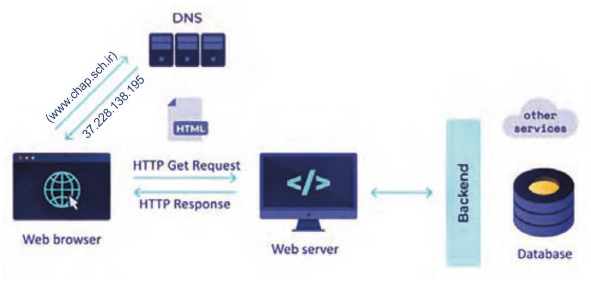

چگونه میتوان عناصر مختلفی مانند متن، تصویر، ویدئو، منو و ... را در صفحه وب نمایش داد؟
پیوند بین صفحات چگونه ایجاد میشود؟
فرمهای ورود اطلاعات چگونه طراحی میشوند؟
CSS چه نقشی در طراحی و زیباسازی صفحات وب ایفا میکند؟
طراحی واکنشگرای صفحه وب نسبت به پهنای دستگاه به چه شکلی انجام میشود؟
در پایان از هنرجو انتظار میرود
صفحه اصلی سایت (index.html) را با ساختاری استاندارد ایجاد نماید.
تگهای سطح بالای صفحه را بهصورت صحیح استفاده نماید.
منوی ناوبری صفحه را با استفاده از تگ <nav> و عنصر لیست، درون عنصر معنایی <header> ایجاد نماید.
محتوای اصلی صفحه را درون عنصر معنایی <main> ایجاد نماید و توانایی بهکارگیری تگ <section> را برای ایجاد بخشهایی از صفحه داشته باشد.
برای نگهداری محتوای بخشهایی از صفحه از عنصر <div> استفاده نماید.
تگ کامنت (``) را برای مستندسازی برخی کدها استفاده نماید.
استاندارد عملکرد
توانایی ایجاد یک ساختار استاندارد برای صفحه وب با بهکارگیری صحیح تگهای HTML5، بهگونهای که ساختار و محتوای صفحه برای موتورهای جستوجو و ابزارهای صفحهخوان (Screen reader) قابل درک باشد، همچنین تنظیمات زبان صفحه و جهت نمایش محتوا در مرورگر بهدرستی انجام شود.
صفحه ۸۵
نحوه کار وب
وب (World Wide Web) در سال 1989 توسط تیم برنرزلی در سازمان پژوهشهای هستهای اروپا (CERN) ایجاد شد. هدف اولیه آن تسهیل به اشتراکگذاری اطلاعات بین محققان بود. اولین وبسایت در سال 1991 راهاندازی شد و از آن زمان به سرعت گسترش یافت و به بخشی اساسی از زندگی روزمره انسانها تبدیل شد.
وب بهوسیله پروتکلهای خاصی مانند HTTP و HTTPS کار میکند. این پروتکلها روشهایی را برای ارسال و دریافت اطلاعات بین مرورگرها و سرورها مشخص میکنند.
زمانی که کاربر یک آدرس وب را در مرورگر خود وارد میکند، مراحل زیر رخ میدهد:
ترجمه نام دامنه: مرورگر به یک سیستم DNS¹ متصل میشود تا نام دامنه (مثلاً www.chap.sch.ir) را به یک آدرس IP تبدیل کند. آدرس IP دریافتی متعلق به وبسرور² مورد نظر خواهد بود.
ارسال درخواست (HTTP Request): پس از دریافت آدرس IP، مرورگر یک درخواست HTTP به وبسرور مقصد ارسال میکند که شامل اطلاعاتی درباره نوع محتوا و درخواست کاربر است.
پاسخدهی سرور (HTTP Response): سرور درخواست را پردازش میکند، در صورت لزوم اطلاعاتی را از پایگاه داده (Database) دریافت میکند و سپس محتوا را به صورت یک پاسخ HTTP به مرورگر کاربر ارسال میکند. این محتوا میتواند شامل فایلهای HTML، CSS، JavaScript و تصاویر باشد.
نمایش محتوا: مرورگر محتوای دریافت شده را تفسیر میکند و آن را بهصورت یک صفحه وب برای کاربر نمایش میدهد (شکل1).

شکل ۱
Page 84
Learning unit 1
Have you ever thought about this
What are the stages of designing a website?
In what form is the first draft of a website presented?
How can different elements such as text, images, video, menus, and so on be shown on a web page?
How are links between pages created?
How are data-entry forms designed?
What role does CSS play in designing and styling web pages?
How is a web page made responsive to the width of the device?
By the end, the student is expected to
Create the site's home page (index.html) with a standard structure.
Use the top-level tags of the page correctly.
Create the page's navigation menu with the <nav> tag and a list element, inside the semantic <header> element.
Put the main content of the page inside the semantic <main> element, and be able to use the <section> tag to create parts of the page.
Use the <div> element to hold the content of parts of the page.
Use the comment tag (``) to document some of the code.
Performance standard
Be able to create a standard structure for a web page by using HTML5 tags correctly, so that the structure and content of the page can be understood by search engines and screen readers (Screen reader), and set the page language and the text direction in the browser correctly.
Page 85
How the web works
The web (World Wide Web) was created in 1989 by Tim Berners-Lee at the European Organization for Nuclear Research (CERN). Its original goal was to make sharing information between researchers easier. The first website went online in 1991, and since then the web has spread quickly and become an essential part of people's daily lives.
The web works through special protocols such as HTTP and HTTPS. These protocols define how information is sent and received between browsers and servers.
When a user enters a web address in their browser, the following steps happen:
Translating the domain name: the browser connects to a DNS¹ system to turn the domain name (for example www.chap.sch.ir) into an IP address. The IP address it gets belongs to the web server² in question.
ارسال درخواست (HTTP Request): پس از دریافت آدرس IP، مرورگر یک درخواست HTTP به وبسرور مقصد ارسال میکند که شامل اطلاعاتی درباره نوع محتوا و درخواست کاربر است.
پاسخدهی سرور (HTTP Response): سرور درخواست را پردازش میکند، در صورت لزوم اطلاعاتی را از پایگاه داده (Database) دریافت میکند و سپس محتوا را به صورت یک پاسخ HTTP به مرورگر کاربر ارسال میکند. این محتوا میتواند شامل فایلهای HTML، CSS، JavaScript و تصاویر باشد.
Showing the content: the browser interprets the content it received and shows it to the user as a web page (Figure 1).